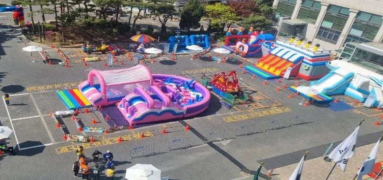

행사 준비 · 2026년 11월 9일
가족행사 대기줄 설계: 유모차·보행 통로·안내판 점검
가족행사 대기줄은 줄 길이보다 들어오는 길과 나가는 길, 서서 기다리는 자리와 지나가는 길을 나누는 일에서 시작합니다. 유모차 이용 가족이 기다릴 곳과 지나갈 곳이 갈리고, 보호자가 아이를 볼 수 있으며, 안내판이 읽히면 현장이 훨씬 차분해집니다. 담당자가 현장에서 바로 확인할 수 있게 정리했습니다.

- 입구와 출구를 나누고, 기다리는 길과 지나가는 길을 따로 정합니다.
- 유모차가 서 있을 자리와 통과할 길을 겹치지 않게 표시합니다.
- 줄 담당과 프로그램 담당은 역할을 따로 적고, 당일 배치는 사전에 확인합니다.
- 대기 위치가 바뀌면 안내판, 마이크 안내, 현장 요원의 말을 같은 내용으로 맞춥니다.
1. 가족행사 대기줄 설계의 출발점: 입구와 출구 나누기
가족행사에서 줄이 엉킬 때는 줄 길이뿐 아니라 들어오는 사람과 나가는 사람이 같은 길을 쓰는지도 살펴봐야 합니다. 체험 부스나 놀이 시설에는 이용을 마친 가족이 빠져나올 길이 필요합니다. 그 길이 대기줄을 가로지르면 아이와 유모차의 이동이 겹칠 수 있습니다.
먼저 도면이나 현장 사진 위에 들어가는 화살표와 나오는 화살표를 다른 색으로 그려 보세요. 두 화살표가 만나는 곳이 있다면 그 자리가 병목이 될 수 있는 곳입니다. 만나는 지점을 없애거나, 만나야 한다면 그곳에 안내 요원을 둘지 담당자가 미리 정해야 합니다.
- 프로그램별 줄의 시작점을 정하고, 입장 지점은 장소 운영 계획에 맞게 표시합니다.
- 출구는 입구와 떨어뜨리고 바로 일반 통로로 이어지게 합니다.

2. 유모차 대기 길과 통과 길 나누기
유모차는 서 있는 시간이 길고, 움직일 때는 한 번에 넓은 길이 필요합니다. 그래서 기다리는 유모차와 지나가는 유모차를 같은 줄에 섞지 않는 것이 핵심입니다. 줄 옆에 유모차를 잠시 세워 둘 수 있는 자리가 있으면, 보호자는 아이와 함께 줄을 서고 지나가는 가족은 막힘 없이 이동할 수 있습니다.
통로 폭은 행사 장소의 시설 기준과 주최 측 안전 계획에 따라 달라집니다. 이 글에서 정해진 폭을 말씀드리지는 않습니다. 대신 현장에서 유모차 한 대가 줄 옆을 지나가도 대기자가 밀리지 않는지 담당자가 직접 걸어서 확인하는 방법을 권합니다. 장소 관리자가 따로 정한 기준이 있다면 그 기준이 먼저입니다.
- 대기 중인 유모차를 세울 자리는 줄의 바깥쪽에, 통과 길은 반대쪽에 둡니다.
- 바닥 경계는 라바콘이나 테이프로 표시하고, 턱이나 케이블 덮개가 있는 곳은 따로 점검합니다.
- 휠체어나 보행 보조 이용자가 지나갈 길도 같은 방식으로 확인합니다.
유모차와 아이를 떨어뜨리는 방식으로 줄을 줄이지 않습니다. 프로그램 참여 조건은 운영자에게 먼저 확인하고, 유모차를 동반한 채 이동하고 기다릴 수 있는지도 살펴 보호자 선택과 시설 운영 조건에 맞는 위치를 안내합니다.
3. 보호자 시야 확보: 줄에서도 아이가 보여야 합니다
가족행사 줄에서 보호자가 불안해지는 순간은 아이가 시야 밖으로 나갈 때입니다. 줄을 지그재그로 꺾으면 길이는 줄지만, 칸막이나 풍선 구조물 때문에 보호자 눈높이에서 아이가 안 보일 수 있습니다. 보호자가 서 있는 자리에서 아이가 노는 자리까지 시선이 이어지는지 직접 서서 확인하세요.
은평구청 어린이날 행사 사진처럼 여러 놀이 시설을 구역으로 나누어 두는 방식은 구역 안에서 줄과 놀이 공간을 정리하는 데 참고가 됩니다. 다만 사진은 하나의 장면일 뿐이고, 우리 행사 공간에는 맞는 배치를 따로 정해야 합니다.

4. 줄 담당과 프로그램 담당의 역할 확인
줄을 정리하는 사람과 프로그램을 진행하는 사람은 하는 일이 다릅니다. 한 사람이 둘을 같이 맡으면 줄이 길어질 때 진행이 멈추거나, 진행에 집중하는 사이 줄이 흐트러지기 쉽습니다. 그래서 대기줄 담당과 프로그램 담당을 따로 적어 두고, 행사 전에 각자 맡은 위치와 일을 서로 확인하는 것이 좋습니다.
여기서 말하는 확인은 몇 명이 필요하다는 약속이 아닙니다. 인원은 행사 규모와 장소, 주최 측 계획에 따라 달라서 상담 때 함께 정합니다. 힐링엔터테인먼트는 대표 MC 이현호가 직접 진행하고, 필요한 진행·음향·무대·현장 운영 범위를 상담으로 확인합니다. 줄 정리를 누가 맡을지는 주최 측과 먼저 이야기해야 합니다.
| 확인 위치 | 맡을 역할 | 안내판·표시 | 담당자 확인 |
|---|---|---|---|
| 입구 | 줄 시작점 안내, 대기 위치 설명 | 프로그램 이름과 입장 안내 | 줄 시작점이 보이는가 |
| 대기줄 중간 | 가족 간격 정리, 아이 시야 확인 | 예상 대기와 다음 순서 안내 | 보호자 시야가 가려지지 않는가 |
| 유모차 자리 | 유모차 세울 곳과 지나갈 길 안내 | 유모차 대기 자리 표시 | 통과 길과 겹치지 않는가 |
| 출구 | 나오는 가족 안내, 입구와 분리 | 출구 방향 화살표 | 입구 줄과 부딪히지 않는가 |
| 모이는 곳 | 만날 장소 안내 | 만남 장소 표지 | 위치가 바뀌면 같이 고쳤는가 |
| 본부석 | 변경 안내와 입장 중지 판단 전달 | 변경 사항 공지판 | 시설 관리자 연락처를 가졌는가 |
5. 읽히는 안내판과 바뀐 대기 위치 안내
안내판은 멀리서도 읽혀야 합니다. 프로그램 이름, 대기 안내, 만나는 곳을 각각 다른 판에 크고 짧게 적으세요. 한 판에 모든 내용을 쓰면 가까이 가야 읽을 수 있어 입구에서 사람이 몰립니다. 아이 눈높이에는 그림이나 기호를, 어른 눈높이에는 글자를 두는 방법도 있습니다.
행사 중에 대기 위치가 바뀌는 일은 흔합니다. 이때 가장 조심할 점은 안내판, 마이크 안내, 현장 요원의 말이 서로 다른 것입니다. 한쪽만 바뀌면 가족은 어느 쪽을 믿어야 할지 몰라 같은 자리에 머뭅니다. 위치가 바뀌면 판을 먼저 고치고, 마이크로 한 번 안내하고, 현장 요원도 같은 문장으로 말하도록 전달합니다.
- 프로그램 이름: 멀리서 읽히도록 큰 글자로 씁니다.
- 대기 안내: 어디서 기다리는지 화살표와 짧은 문장으로 알립니다.
- 만나는 곳: 길을 잃었을 때 모일 위치를 정하고 판과 안내를 일치시킵니다.
6. 흐름이 유지되지 않을 때: 입장 중지와 시설 관리자 상담
줄이 통로까지 밀려 나오거나 유모차 길이 막히는 상황이 생길 수 있습니다. 이때는 입장을 잠시 멈추고 시설 관리자와 상의하는 기준을 미리 정해 두세요. 누가 멈추자고 판단하고, 누가 방송하며, 누가 시설 관리자에게 연락하는지를 행사 전에 정해야 당일에 망설이지 않습니다.
입장을 멈춘 뒤에는 새 대기 위치를 정하기 전에 현재 통로가 비어 있는지부터 확인합니다. 줄을 옮길 때는 가족을 여러 방향으로 한꺼번에 움직이게 하지 말고, 시설 관리자와 현장 담당자가 합의한 방향으로 안내합니다. 다시 참여를 받는 시점과 안내 문장은 판단 담당자가 정해 함께 전달하고, 같은 문제가 반복된다면 프로그램의 참여 방식이나 운영 구역 자체를 조정할지 검토합니다. 이 확인표만으로 현장의 안전이 확보된다고 판단하지 말고, 장소별 운영 조건과 주최 측의 안전 준비를 별도로 확인해야 합니다.
비슷한 구조를 보고 싶다면 노원가족문화예술축제 이야기를 보세요. 체험 부스, 무대, 이동 공간이 한 장소에 있는 사진을 바탕으로 한 글이고, 이 점검표를 그 행사에서 썼다는 뜻은 아닙니다. 현장 사진은 참고 자료로만 보시고, 우리 행사는 견적 문의나 자동 견적서로 날짜·장소·인원·행사 종류를 알려 주시면 상담합니다.
자주 묻는 질문
가족행사 대기줄은 입구와 출구를 꼭 나눠야 하나요?
입구와 출구를 어떻게 나눌지는 장소 조건과 시설 운영 기준을 확인해 정합니다. 가능한 한 동선의 교차를 줄이고, 겹치는 곳은 현장 담당자와 배치를 조정합니다.
줄 담당 인원은 몇 명이 필요한가요?
정해진 인원을 말씀드릴 수 없습니다. 행사 규모, 장소, 주최 측 계획에 따라 달라서 상담에서 줄 담당과 프로그램 담당의 역할부터 나누어 확인합니다.
행사 중에 대기 위치가 바뀌면 어떻게 하나요?
안내판을 먼저 고치고 마이크 안내와 현장 요원의 말을 같은 내용으로 맞춥니다. 줄이 유지되지 않으면 입장을 잠시 멈추고 시설 관리자와 상의합니다.
행사 날짜가 정해지셨나요?
날짜 · 지역 · 인원 · 행사 종류만 알려 주시면 행사에 맞춰 상담 · 견적을 안내드립니다. 행사 중엔 통화가 어려우니 문자 · 카톡을 남겨 주세요.